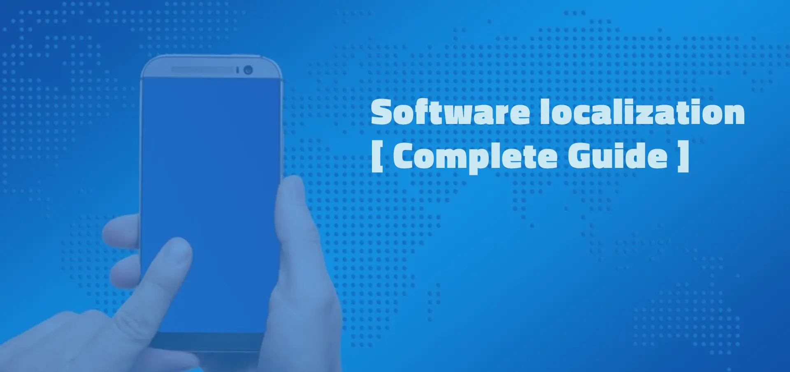
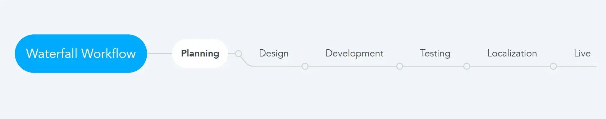
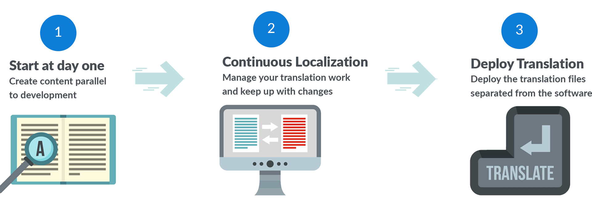
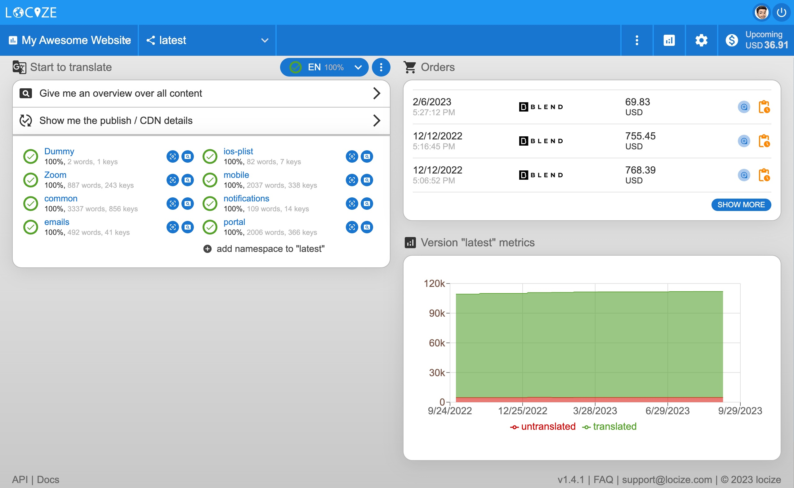

According to a recent study, the global market for software localization generated $5.9 billion in revenue in 2022 and is predicted to grow even more until 2032, when it is predicted to reach $15.6 billion.
Since the COVID-19 pandemic, as businesses shifted operations online and broadened their global reach as a result of increased business focus on global expansion, this topic has become even more important.
Software localization can be an expensive process, especially for small and medium-sized businesses (SMEs) with tight budgets, and it takes time and resources to ensure high-quality results in localization projects.
What is it about and what benefits can it offer your business?
If you are faced with this issue, you can get started with these details.
Let's go!
Table of contents
- What is software localization?
- How does localization take place?
- Why localization of software is important
- Successful implementation
- Who needs localization of software?
- Test our solution for free
What is software localization?
Software localization helps to adapt software to the language and circumstances of the target market while retaining its originality. This means that not only is the text being adapted into the relevant language, but the design and overall user experience (UX) are amended to ensure that it meets the needs of the target audience.
While internationalization (i18n) is about developing a product to meet the demands of a specific culture or audience, localization of software is a far more in-depth solution. The process usually requires the complete modification of text and multimedia for a software product.
For example, trying to localize a piece of software that is in English into Chinese is not simply a case of translating the wording. The length of text and symbols are entirely different, meaning the whole visual layout will need to be amended to ensure the overall user experience (UX) remains the same.
Software localization goes much further than that, too. It also looks at the resources and links being used, the time- and date-format, the use of images or gestures to ensure they are culturally appropriate, and even the direction the text needs to be read in.
This makes the whole process incredibly complex and time-consuming process, but it is a worthwhile investment for any developer.
How does localization take place?
Software can be localised in two core areas, internationsalisation and then localization. The internationalization process covers the design and development, which means you should:
- review your application framework to ensure it can support your requirements
- thoroughly plan your content, including understanding how much space translated text will require.
- incorporate the needs regarding content into the design, helping to make the localization more effective.
- code your strings to allow you to expand when required.
- externalize any strings that have been prepped for localization
Once you have successfully completed the internationalization phase, you should then begin to incorporate the localization phase. This is the process of translating your content utilizing a skilled translator and ensuring they are covering every part of your software.
The translation is one of the most important parts of your localization, so once complete, you must thoroughly review everything. This includes checking the accuracy of the content, the quality of the language, and the terminology being used.
Once finished, you will then need to copy the translations into your software and begin testing it in every locality you are targeting. When you are certain that the software is working as designed and free from bugs, it can then be released to the public.
Waterfall vs continuous localization: What’s the difference?
For localization of software there are different workflows. The most traditional is to break down the activities into linear sequential phases - the so called waterfall workflow, where each phase depends on the deliverables of the previous one and corresponds to a specialization of tasks.

Continuous software localization combines software development and localization into one process so that software developers work in parallel with the localization team from the very beginning:

Why localization of software is important?
Thanks to the advancement of technology, we now live in a highly connected world. We are able to communicate with companies and organizations across the globe in a matter of seconds. However, while communication has never been more accessible, being able to understand the nuances and cultural differences of these communities is crucial.
Globalization gives software developers the chance to access hundreds of millions of potential new customers. In order to do this successfully, though, they need to ensure they are offering every client the very best user experience.
There are many benefits to focusing on the software-localization-process, including:
Maximizing your sales
Localization gives you the chance to enjoy success on an international scale. When you are able to provide the end user with the very best experience, no matter where in the world they might be located, it will ensure you can quickly and easily enter new markets. Not only will this help to maximize your sales, but it can also help to strengthen your position in both the local and international market.
Improving user experience
High-quality localization can ensure everyone is able to enjoy the very best experience when using your products. Not only will they be able to clearly understand what you are saying, but they will get the most out of your software too. This improves the overall user experience, giving them a greater impression of your brand.
Staying ahead of your competitors
In the fast-paced world that we live in, keeping your brand ahead of your competitors has never been more important. The software localization definition is about giving your customers the very best experience possible. That will allow you to stand out from the crowd, minimizing the risk of losing potential customers while also helping you to attract even more customers.
Enhancing feedback
Another significant benefit of the localization process, but one that is often overlooked, is that it can help you enjoy more feedback. When you have more users engaging with your software, it will help you to develop more in-depth feedback and generate more ideas for the future.
9 steps to successfully implement software localization
This guide will walk you through the essential steps to successfully implement software localization in your company. Whether you're a small startup or a large enterprise, embracing localization can help your software resonate with international users and drive business growth.
1) Assessment and Planning
Choose the languages and markets you want to target. Check to see if your software is localization-ready with these questions:
- Is your code dependable and bug-free?
- Has your main language UI been put into place?
- Is your text in main language complete?
- Is your character encoding correct?
2) Translation
Choose professional translators or translation tools. Maintain context and accuracy during the translation process. A professional translation management system has integrations with platforms offering translation services. A TMS supports increased project effectiveness, lower manual error rates, and guarantee timely delivery of localized software.
3) Visual Elements / Graphic Design
Customize visual elements to align with local preferences. Respect cultural norms and sensitivities. It would help if you also considered implementing a style guide, covering things such as your branding, tone of voice, and formality. This will ensure a consistent and clear approach, no matter where in the world your users are accessing your software.
4) Compliance with Legal and Regulatory Requirements
Ensure compliance with local laws and regulations. Conduct a thorough analysis of legal and regulatory requirements that pertain to your software, including data privacy laws like GDPR, accessibility standards such as WCAG , and industry-specific regulations.
5) Testing
Thoroughly test the localized software for functionality and display. Identify and fix issues during the testing phase.
6) Quality Assurance (QA)
Establish a QA process to ensure the quality of localized versions. Address any bugs or issues found during QA.
7) Documentation and Support
Translate user documentation and support materials. Offer customer support in the localized languages.
8) Release and Distribution
Prepare localized versions for distribution. Update marketing materials to promote the new languages.
9) Maintenance and Updates
Regularly update localized versions while maintaining quality.
See it as an extension of your software development
To make sure the localization-process is as efficient and effective as possible, you should see it as an extension of your development. That means rather than seeing it as a task to complete in the final stages, you should incorporate it in every step of your software development. By adopting this approach, you can ensure that you are maximizing the user experience, and it can also help to speed up the delivery time.
Use a localization platform
Effective software localization is a vast project, and utilizing a proven localization management platform can help to make the process easier. When choosing a platform, you should ensure that it has been developed specifically for localization. This will help to offer greater customization and allow you to integrate essential tools. For example react localization is made incredibly simple for developers when used in conjunction with the i18next framework.
You may use locize to make the process of the localization-projects of your company easier. Locize is the platform for effectively localizing your website, mobile app, video game or any other web product. 
Who needs localization of software?
The next decision is whether it is right for you. If your software targets a specific community or a selected region, localization might not be required.
However, if you are looking to expand into wider communities or give yourself the opportunity to do that at a later date, then it is something you should consider. Even if you are not considering an international move just yet, you should prepare as much as you can during the development stage.
The industry you work in should also be a major consideration. Software localization should be a major consideration for those working in the e-commerce, legal, or governmental sectors. Of course, it is not just limited to these sectors, so make sure you consider both your current and future requirements when deciding if you need l10n.
In this technology-driven world, globalization means seeing an increasing number of organizations and companies working beyond their traditional localities. Software localization is crucial in helping you to successfully expand your business to other countries, allowing you to maximize your sales, boost your profits, and stand out from the crowd.
You definitely will need it when
- your business plan targets multiple regions or is region specific
- you're developing your software code right now. It's easy to take care of localization at this stage
- you have a many-to-many business model and are planning to grow exponentially.
These types of developers should take care of localization:
Web developers
Developing code that tells websites and web applications how to operate.
SaaS or cloud
developers
Developing cloud-based applications and making it available to end users.
Desktop application developers
Writing code for software applications that run natively on operating systems.
Virtual Reality application developers
Creating and testing applications in virtual reality or metaverse.
Mobile app developers
Developing software applications for smartphones and other mobile devices.
Video game developers
Helping transform games from a concept to a playable reality.
Blockchain developers
Enabling secure digital transactions by creating systems to record and store blockchain data in a way that prevents changes or hacks.
Integration developers
Responsible for the complete life cycle of information systems.

Localization of software in parallel to development
Connect your project directly to locize and automatically have new "non-translated" parts of your application sent to locize. You will be able to use locize CDN translations or translate within your web application directly. All newly generated keys in the reference language are automatically translated into the target languages using machine translation, such as Google Translate, when this option is selected.
Now we want to turn it over to you:
Do you plan to invest in software localiztion?
Will you change the way development and translation are handled?
You might also have a query regarding something you read.
Either way, let us know by leaving a message to support@locize.com right now.
Register for free
For a 14-day free trial period, register for free below and start your localization experience today! Or learn more about the platform's features, benefits, and if it is the right solution for you.